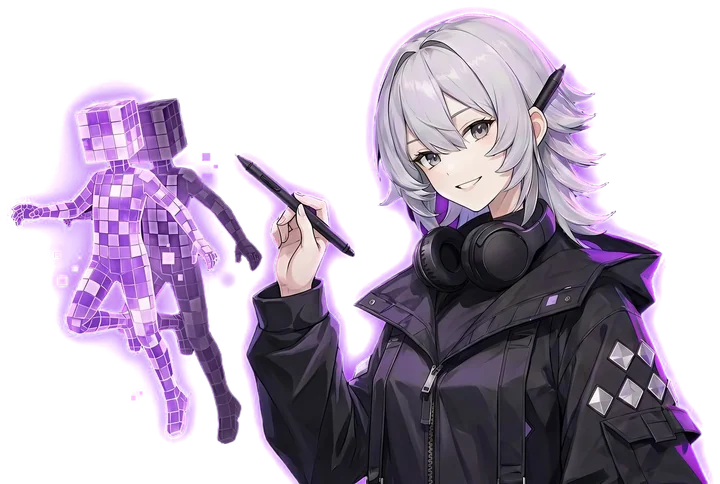
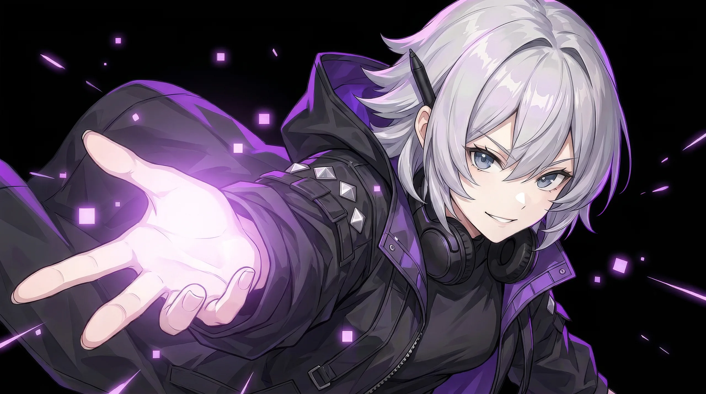
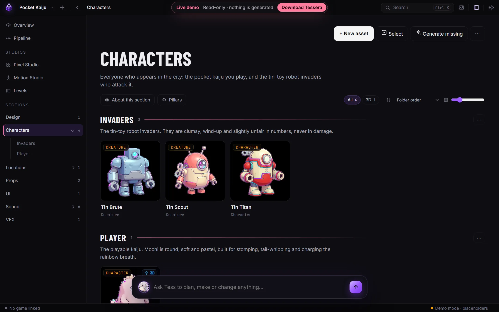
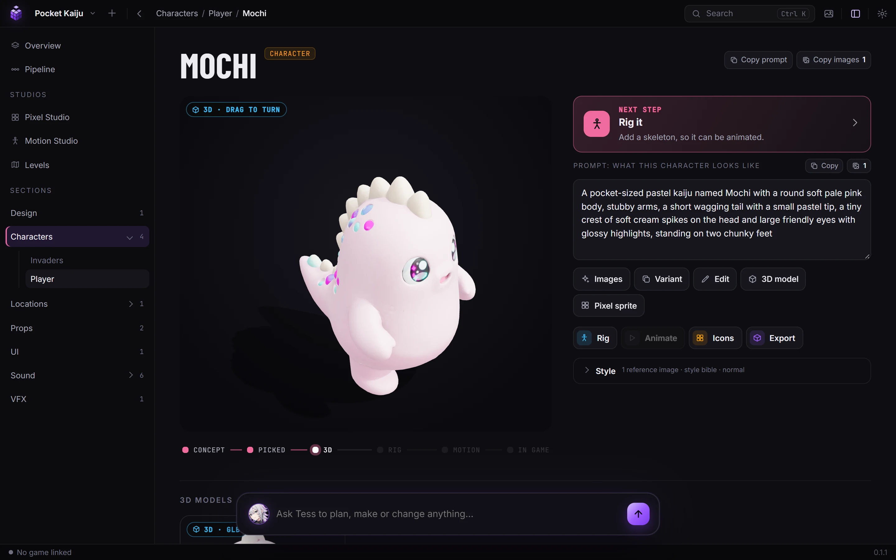
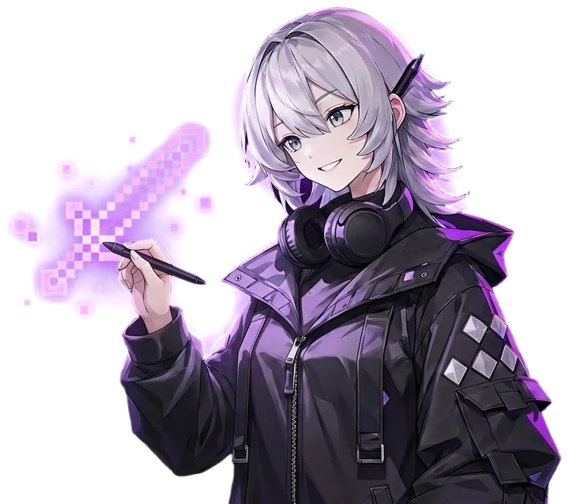
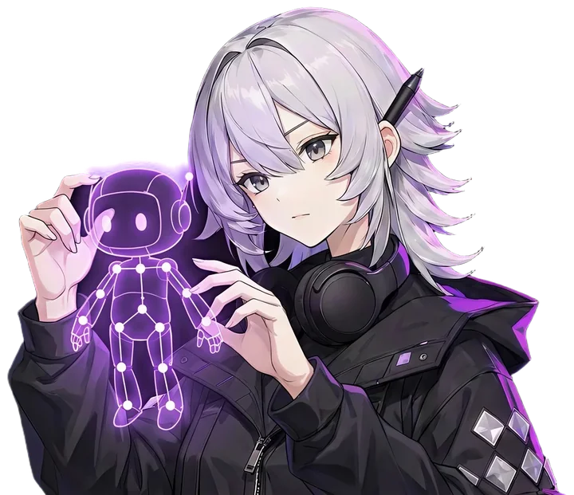
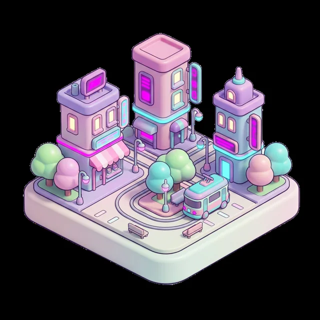
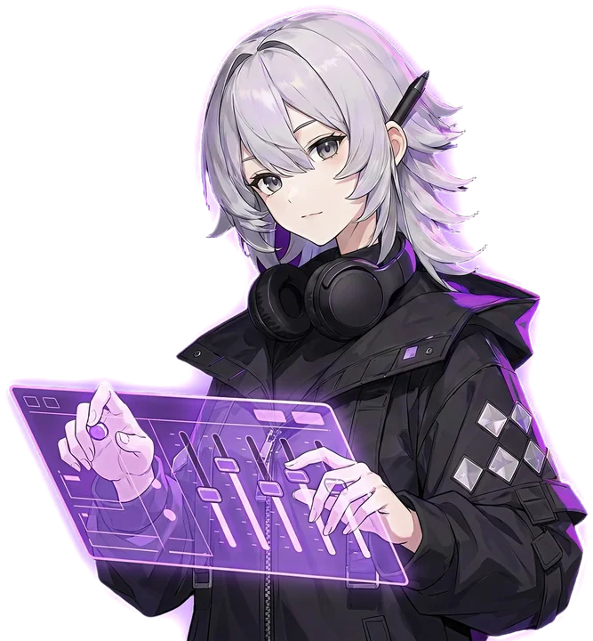

Motion
sliders, not keyframes
Motion Studio
Pick a walk or an attack, then shape it with sliders. No keyframes.

Tessera Studio is a free desktop workspace for all of your game's art. Tess plans every asset, keeps them in one style, and follows each one from first picture to the file in your game.
A generator hands you one picture and forgets it. Tessera keeps the whole game: every asset, in one style, from the first idea to the file in your build.
Tess reads your pitch, lists every character, prop, place and sound the game needs, and makes them all in one style.
Every section of your game in one place. Click any asset for its picture, its prompt and the next step.



Pick a walk or an attack, then shape it with sliders. No keyframes.

Sprites, tiles and icons drawn on a true grid, in your palette.

Your picked picture becomes a textured, rigged model at game scale.

Describe a place and get a matching kit of blocks and props.
Effects, music loops and voice lines. Keep the take that fits.

Free on your own graphics card, or your own accounts at cost.
Tessera never touches your game's code. It keeps one list of every finished file, and Claude Code, Codex, Cursor or any agent that reads files copies what it needs.
Read tessera/ASSETS.md and copy the art you need into the game.Free to use. About a minute to install.
Set up Tessera Studio for this game: read https://soulnassim.github.io/tessera/agent.mdirm https://soulnassim.github.io/tessera/install.ps1 | iexcurl -LsSf https://soulnassim.github.io/tessera/install.sh | shFirst launch: on Windows click More info → Run anyway; on macOS right-click → Open.